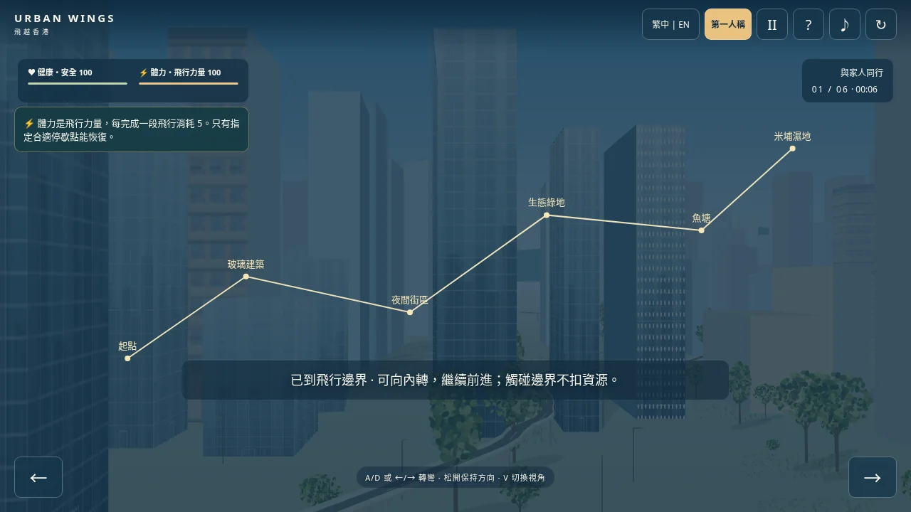
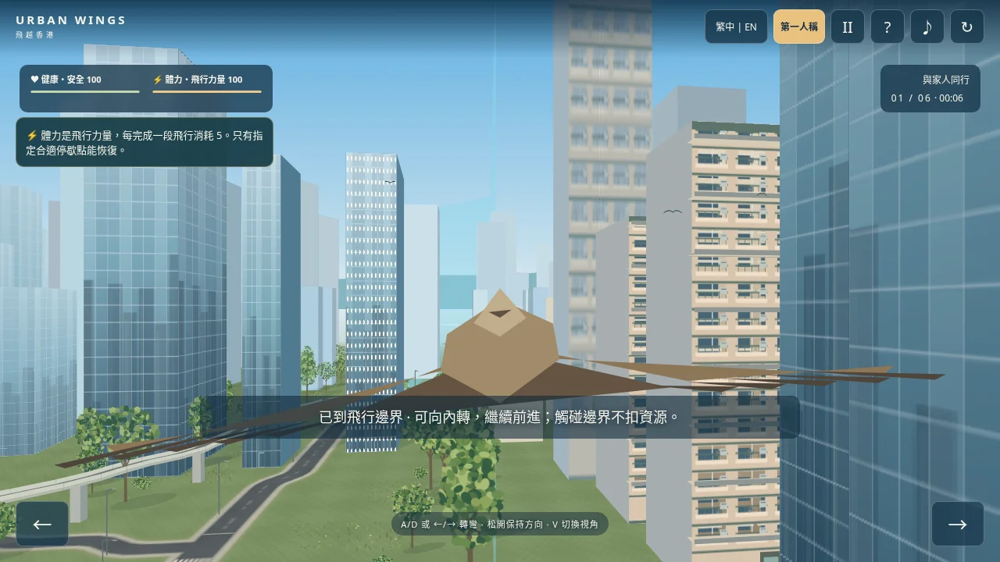
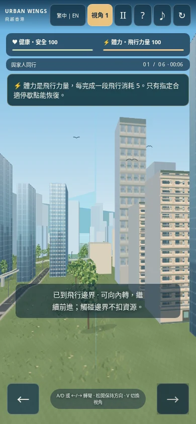
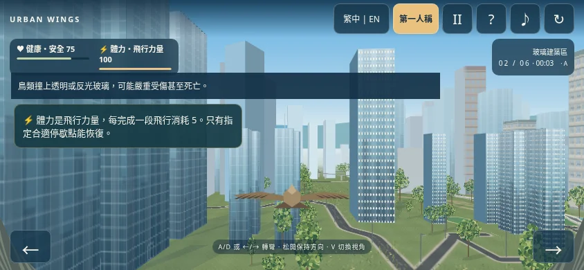
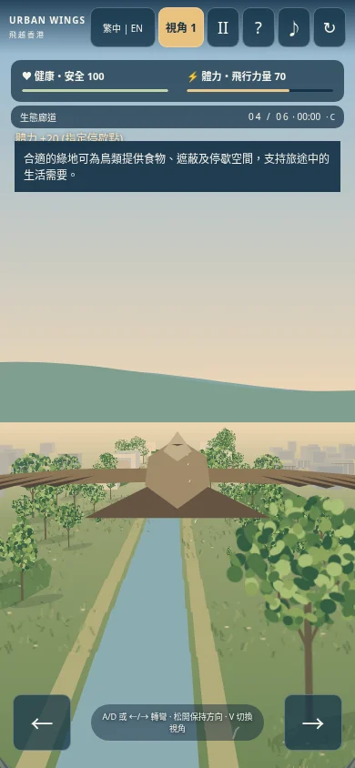

版本 UW-STABILITY-1
进入游戏 · 完整报告 · 九种完整旅程记录 · 键盘与触屏测试
限制越界飞行；撞楼持续受阻后恢复到同一进度附近的安全位置；停歇必须实际进入指定区域，不再定时自动增加体力。保留原有场景、知识、视角和结尾。
| 事件 | 变化 |
|---|---|
| 轻微 / 严重碰撞 | 健康 −15 / −25 |
| 完成飞行段 / 绕行 / 灯光修正 | 体力分别 −5 |
| 指定停歇 / 抵达湿地 | 体力 +20 / +10，最多 100 |
| 触边 / 脱困位置恢复 | 不额外扣资源，也不补资源 |
本地 Chromium 测试包含桌面、手机竖屏与横屏、两种视角、60 Hz 与 4 Hz 碰撞、九种完整通路组合。手机为模拟，未使用实体手机。整段旅程使用测试驾驶程序；正常游戏没有自动驾驶。




